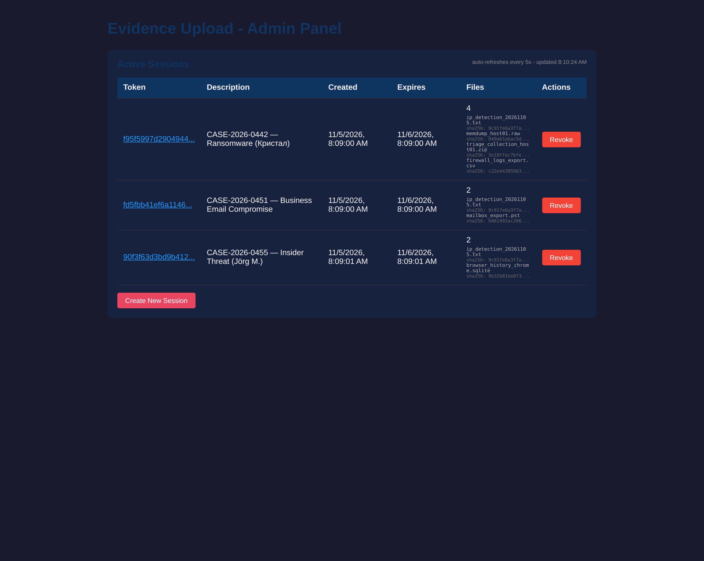
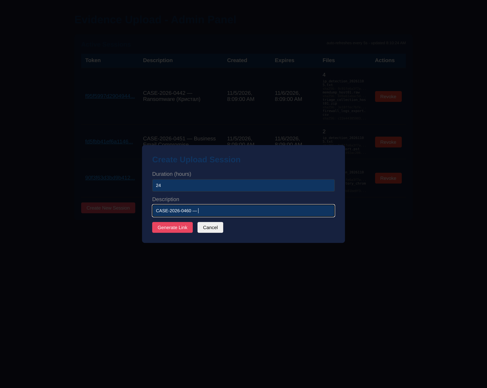
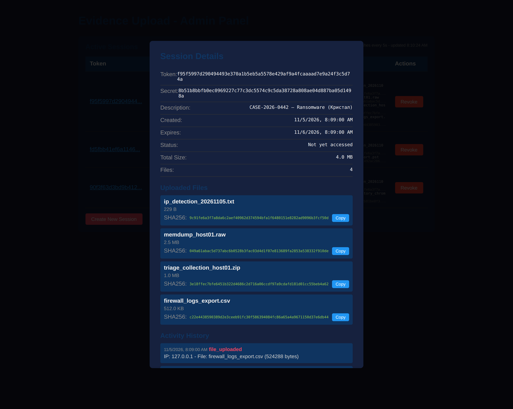
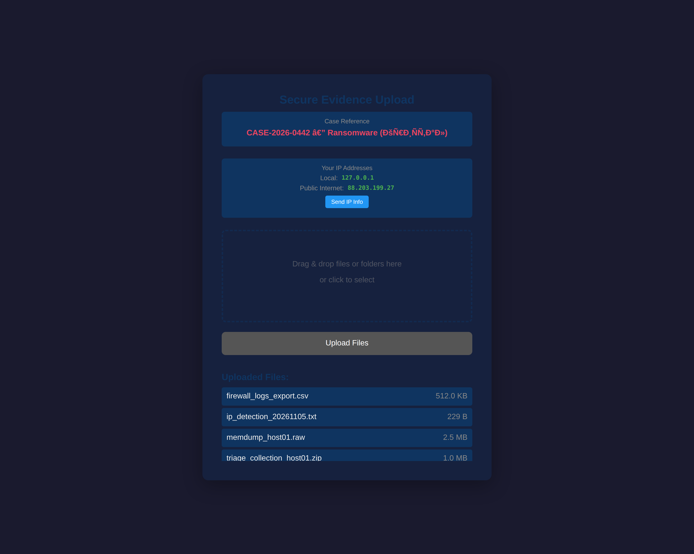
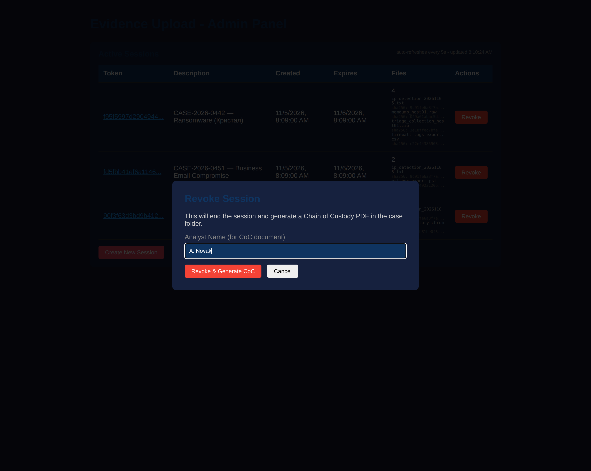
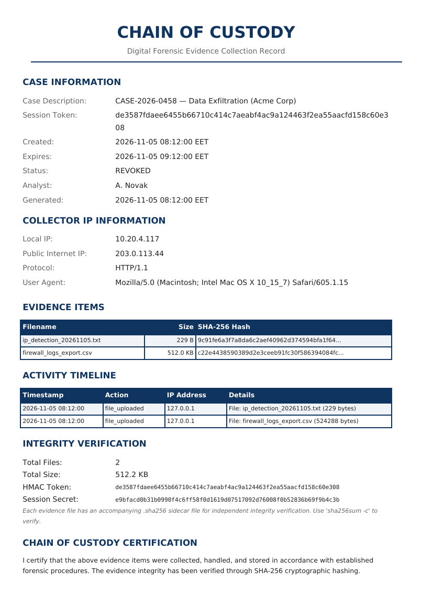

Evidence Upload is a self-hosted web application for collecting digital forensic evidence from remote parties. The analyst runs the server, creates a one-time upload session, and shares a link. The remote party uploads evidence through a simple browser interface — no account, no client software. Every file is hashed on arrival, and closing the session produces a Chain of Custody PDF suitable for case documentation.
.sha256 sidecar files for independent verification
Download the archive for your platform from the
Releases page of the project repository. Unix builds ship as
.tar.gz archives — extracting restores the executable bit, so no
further steps are needed:
# macOS (Apple Silicon) curl -LO https://github.com/4553n/evidence-upload/releases/download/v2.2.3/evidence-upload-v2.2.3-macos-arm64.tar.gz tar -xzf evidence-upload-v2.2.3-macos-arm64.tar.gz # macOS (Intel) — use the -macos-amd64 archive # Linux — use the -linux-amd64 archive # Windows — download the .exe and run it directly
chmod +x evidence-upload and
xattr -d com.apple.quarantine evidence-upload, or right-click →
Open → Open.
Start the server from a terminal. With no flags it listens on port 8443 and stores evidence in ./evidence:
$ ./evidence-upload-v2.2.3-macos-arm64 Evidence Upload Server v2.2.3 starting on :8443 Storage: ./evidence Base URL: Admin token: 3f2a91c0e7b4d5a8c1e2f304b5d6a7c8 (keep private; set via -admin-token or ADMIN_TOKEN) Opening admin interface...
The browser opens the admin panel automatically, pre-authenticated with the
admin token. Use -no-browser to suppress the auto-open.
-admin-token).
Anyone holding it has full administrative control of the server. Store it like
a credential — in a password manager, not in a shared document.
The admin panel at /admin lists every active session. The table
refreshes automatically every five seconds — upload counts, file names, and
hashes appear without reloading the page. The refresh pauses while the tab is
hidden and resumes when you return.

| Column | Meaning |
|---|---|
| Token | Session identifier — click it to open the full session detail view |
| Description | The case description chosen at creation; also names the evidence folder on disk |
| Created / Expires | Session validity window; expired sessions are cleaned up automatically |
| Files | Upload count, with each file name and a short SHA-256 prefix |
| Actions | Revoke — closes the session and generates the Chain of Custody PDF |
Click Create New Session, choose how long the link should stay valid, and enter a description. Use whatever identifies the case for you — a case number, ticket ID, or short summary. The description becomes the name of the evidence folder on disk (sanitized to a safe form).

When the session is created, the panel shows the upload link to share:
https://your-host:8443/?token=f95f5997d290…&secret=8b51b8bbfb0e…
token identifies the session; the secret authorizes
uploads to it. Anyone with the full link can upload evidence into the case.
Send it to the intended party only, over a trusted channel.
Click a session's token to open its detail view. It updates live while open and shows everything recorded about the session so far.

The remote party opens the upload link in any modern browser. There is nothing to install and no account to create. The page is intentionally minimal — it can only upload, never download.

A triage package is a collection artifact (for example a full triage output zip) that you want to hand to the remote party — typically an acquisition script output or a package they must run and return. From a session's detail view, use Send Triage Package to upload one, or Replace to swap it later.
Each package gets a public download link:
https://your-host:8443/triage/f95f5997d290…
When collection is finished, click Revoke. You are prompted for the analyst name that will appear on the certification block of the Chain of Custody document.

Revoking writes CHAIN_OF_CUSTODY.pdf (plus a
.sha256 sidecar of the PDF itself) into the case folder next to
the evidence. Sessions that expire without being revoked get the same document
automatically, signed as System (expired).

.sha256 sidecars with sha256sum -cText in the PDF is rendered with embedded Unicode fonts (DejaVu), so case names in any script — Cyrillic, Greek, Hebrew, accented Latin — render correctly. Characters outside the fonts' coverage (emoji, CJK) are marked with a replacement glyph rather than breaking the document. The footer records the exact software version that generated the document.
| Flag | Default | Description |
|---|---|---|
-port | 8443 | Server port |
-storage | ./evidence | Local storage path for uploaded files |
-backup | "" | Network share backup path (optional) |
-expire | 24h | Default session expiration duration |
-secret | auto-generated | HMAC secret key |
-admin-token | auto-generated | Admin panel token (printed at startup) |
-max-size | 10737418240 | Maximum upload size in bytes (10 GB) |
-alert-email | "" | Email address for security alerts |
-alert-webhook | "" | Webhook URL for alerts (Slack/Discord/etc.) |
-alert-desktop | true | Enable desktop notifications |
-alert-log | ./alerts.log | Log file for security alerts |
-external-ip | auto-detected | External/public IP for internet access |
-base-url | auto-detected | Base URL used in generated links |
-tunnel | "" | Tunnel provider: bore, cloudflare, or external |
-bore-path | auto-detected | Path to the bore binary |
-cloudflare-path | auto-detected | Path to the cloudflared binary |
-cloudflare-domain | "" | Custom domain for the Cloudflare tunnel |
-cloudflare-token | "" | Cloudflare tunnel token (from the dashboard) |
-tunnel-name | "" | Named tunnel for Cloudflare (created if missing) |
-tunnel-url | "" | External tunnel URL (multi-analyst mode) |
-no-browser | false | Don't auto-open the browser on startup |
-version | — | Show version and exit |
Settings can be persisted instead of typed on every run. Location:
~/.evidence-upload.conf on Linux/macOS,
%USERPROFILE%\.evidence-upload.conf on Windows.
Priority: command-line flags > environment variables > config file > defaults.
# ~/.evidence-upload.conf STORAGE=/mnt/evidence/cases BACKUP= ADMIN_TOKEN=a-long-random-token-you-chosenya ALERT_EMAIL=soc@example.com ALERT_WEBHOOK=https://hooks.slack.com/services/… TUNNEL=cloudflare CLOUDFLARE_DOMAIN=evidence.example.com
After editing, protect the file: chmod 600 ~/.evidence-upload.conf.
When uploaders are on the internet, a tunnel exposes the server without opening
firewall ports. Choose the provider with -tunnel.
| Mode | Transport | Notes |
|---|---|---|
-tunnel cloudflare | HTTPS | Recommended for internet exposure. Quick tunnels get a random
trycloudflare.com URL; token-based tunnels can use your own domain.
Interoperates well with Cloudflare Access. |
-tunnel bore | Plain TCP | Zero configuration, but traffic (including the admin token) travels unencrypted. Use only on trusted networks. |
-tunnel external | Depends | For multi-analyst setups: provide the public URL with
-tunnel-url when something else already exposes the server. |
| Control | How it works |
|---|---|
| Admin token | Every /admin/api/* endpoint requires it
(X-Admin-Token or Authorization: Bearer). Auto-generated
at startup, printed once per run; the panel prompts and remembers it for the
browser session. Compared in constant time. |
| Session credentials | Uploads require the session's HMAC token and secret — both are 128-bit random values. Secrets are never included in the session list API. |
| IP binding | First access locks the session to the uploader's IP; mismatches are rejected and alerted. |
| Integrity | SHA-256 computed server-side per file, written as .sha256
sidecars; the CoC PDF itself is hashed too. |
| Audit trail | Every action recorded with timestamp and source IP; reflected in the CoC PDF and the alert log. |
| Alerts | Desktop, email, webhook, and log-file notifications for uploads and access anomalies. |
| Symptom | Cause and fix |
|---|---|
zsh: permission denied |
The binary lost its executable bit in download. Use the .tar.gz
release archive, or run chmod +x on a bare binary. |
| macOS: "cannot be opened because the developer cannot be verified" | Gatekeeper quarantine on downloaded binaries. Right-click → Open
→ Open, or clear with
xattr -d com.apple.quarantine <file>. |
| "Failed to revoke session: Could not reach the server" | The browser lost the server (process stopped, tunnel dropped). Check the server terminal, restart if needed, and retry. |
| "Server error (HTTP 401): invalid or missing admin token" | The admin token is wrong or expired for this browser session. Reload the panel and enter the token printed at server startup. |
| Session rejects the uploader | IP binding: the session was first accessed from a different address. Create a new session if the change is legitimate. |
| Admin panel shows unexpected sessions | If the server is internet-exposed, external scanners may create sessions through old, unauthenticated versions. Update to v2.2.2 or later, revoke unknown sessions, and check the activity history for source IPs. |
| CoC PDF missing after revoke | Check the server terminal for the error. Very long descriptions are truncated safely since v2.2.2; regenerate by revoking again or from expiry. |
| Garbled characters in old CoC PDFs | Fixed in v2.2.3 (embedded Unicode fonts). Documents generated by older versions remain valid; their text layer used Latin-1 fonts. |
Each release ships a SHA256SUMS file. Verify your download:
$ shasum -a 256 -c SHA256SUMS # macOS $ sha256sum -c SHA256SUMS # Linux
LICENSE in the repository)internal/custody/fonts/LICENSE-DejaVu.txtEvidence Upload v2.2.3 — User Manual · Generated 2026-11-05 · Interfaces shown are from the v2.2.x series.